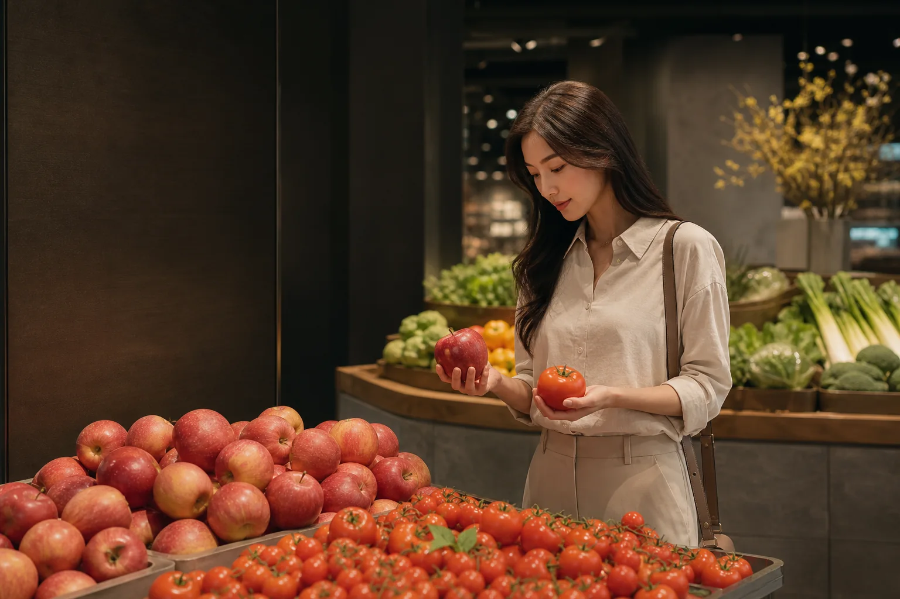
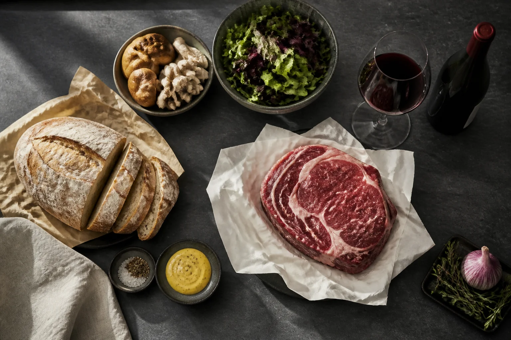

Mission Shopping
정해진 상품을 검색하고 가장 적은 노력으로 구매한다.
RETAIL EXPERIENCE STRATEGY · 01—07
다섯 감각을 고객 행동으로, 고객 행동을 매출로 전환하는
이마트 연계 오프라인 리테일 전략.
상품 판매 공간에서
상품 경험 공간으로.
01 · THE CHALLENGE
편의성의 경기장에서
온라인을 이기려 하지 않습니다.
정해진 상품을 검색하고 가장 적은 노력으로 구매한다.
직접 보고, 고르고, 경험하며 사고 싶은 것을 발견한다.
02 · THE CONCEPT
모든 공간에서 모든 감각을 자극하지 않습니다. 한 구역에는 하나의 주인공 감각을 두고, 각 감각을 명확한 고객 행동에 연결합니다.
SIGHT → DISCOVERY
산지, 단면, 조합, 조리 장면을 눈앞에 펼쳐 검색하지 않았던 상품과 마주치게 합니다.

DISCOVERY CONFIDENCE
PROCESS DESIRE

OCCASION CROSS-SELL
03 · HERO SENSE JOURNEY
아래 여정을 선택해 각 구역의 Hero Sense와 행동 목표를 확인해보세요.
오늘의 발견
오늘의 메뉴와 제철 상품을 입구에서 예고합니다.
04 · CORE PERSONA
맞벌이 직장인 · 초등 자녀 2명
토요일 오후 가족 장보기
과일과 고기는 보고, 만지고, 비교해 실패를 줄입니다.
메뉴를 먼저 선택하고 여러 카테고리의 상품을 연결합니다.
아이도 참여하고 어른도 발견하는 가치 있는 쇼핑 시간을 만듭니다.
05 · 4-WEEK PILOT TEST
가정 점포 내 기존 자산을 활용해 적용 전 4주와 적용 후 4주를 비교합니다. 핵심은 ‘체험이 좋다’가 아니라 어떤 감각이 어떤 구매 행동을 만드는지 증명하는 것입니다.
시각 · 촉각 · 미각
당도·산미·식감을 비교하고 직접 보고, 들어보고, 맛본 뒤 나에게 맞는 농산물을 선택합니다.
후각 · 청각 · 미각
굽는 시간을 공개하고 실제 향, 조리음, 완성 순간을 상품 콘텐츠로 전환합니다.
미각 · 후각 · 시각
상품 하나가 아닌 ‘오늘 저녁’을 제안해 고기·채소·와인·소스를 하나의 생활 장면으로 연결합니다.
PILOT SUCCESS CRITERIA
수치는 예측 결과가 아닌 파일럿의 제안 기준이며, 실제 운영 데이터에 따라 조정합니다.
06 · SENSE-TO-SALES FLYWHEEL
“어떤 경험이 어떤 상품의 구매를 높였는가?”
경험 데이터를 점포·시간대·카테고리별로 축적합니다. 매출 효과가 낮은 체험은 줄이고, 체류와 전환을 함께 높이는 체험은 확대합니다.
07 · POSITIONING & MOAT
오체FULL 이마트는 구매 효율성을 버리지 않으면서 감각 경험을 극대화합니다. ‘놀러 갔는데 장도 보는 곳’이 아니라 ‘경험하면서 더 잘 사는 곳’입니다.
구매 시간을 줄인다.
Mission Shopping장보기 시간을 가치 있게 만든다.
Discovery Shopping공간 자체를 경험한다.
Space Experience상품 자체를 경험한다.
Product Experience오체FULL MOAT
한 공간에 존재하는 실제 상품과 물리적 경험 인프라.
굽고, 썰고, 만드는 현장 자체를 상품 콘텐츠로.
검색하지 않았던 상품과 우연히 만나는 설계된 발견.
감각과 구매 행동의 연결을 축적하고 반복 최적화.
08 · EXECUTION PRINCIPLES
비용·인력·위생·혼잡·감각 피로를 먼저 인정하고, 작게 검증해 효과가 있는 경험만 확장합니다.
감각 과부하를 막고 구역별 행동 목표를 선명하게.
대규모 공사보다 기존 설비·진열·안내를 먼저 활성화.
비교표·샘플·QR 등 저인력 경험을 기본으로 설계.
체류시간이 아닌 구매전환과 연관구매까지 함께 평가.
한 점포, 세 구역, 4주 실험 후 성과가 있는 것만 확대.
RISK RESPONSE
THE PROPOSAL
오체FULL만족은 오감 마케팅이 아닙니다. 이마트가 이미 보유한 실물 상품과 공간을 활용해 감각 경험을 구매 행동으로 전환하고, 그 데이터를 더 나은 경험에 다시 투자하는 전략입니다.